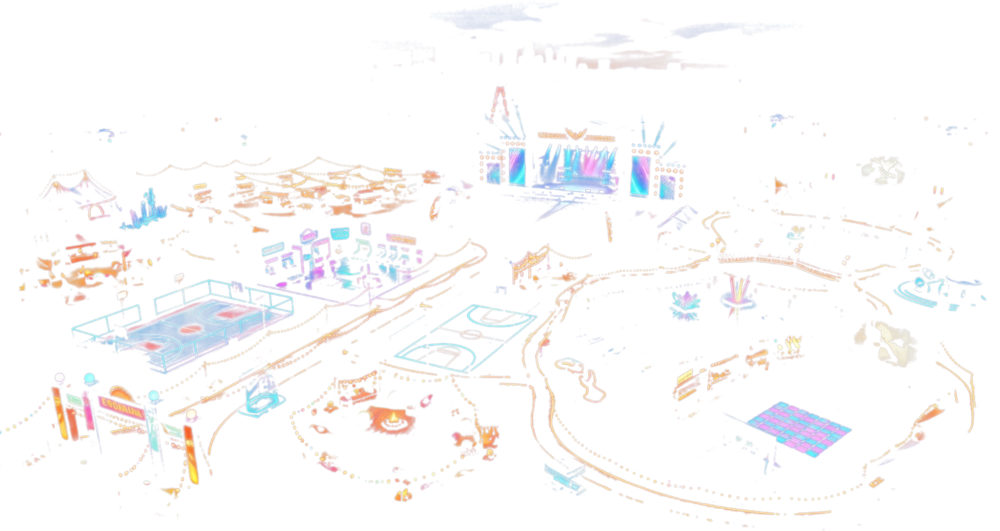
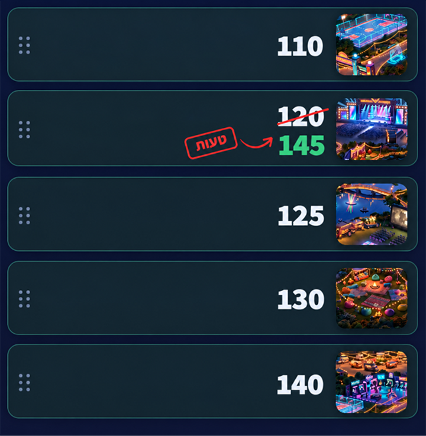
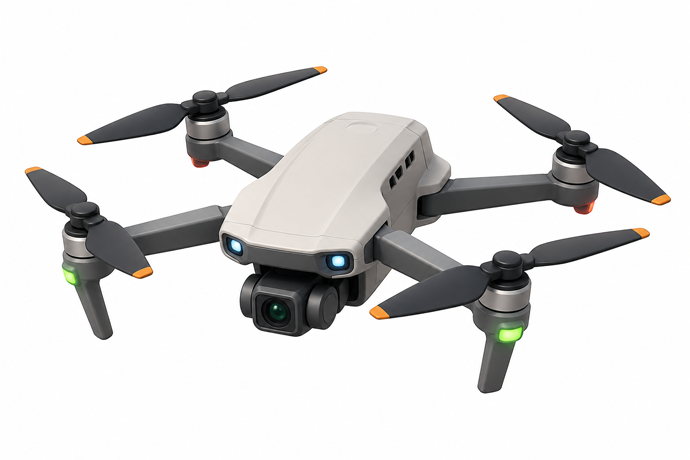
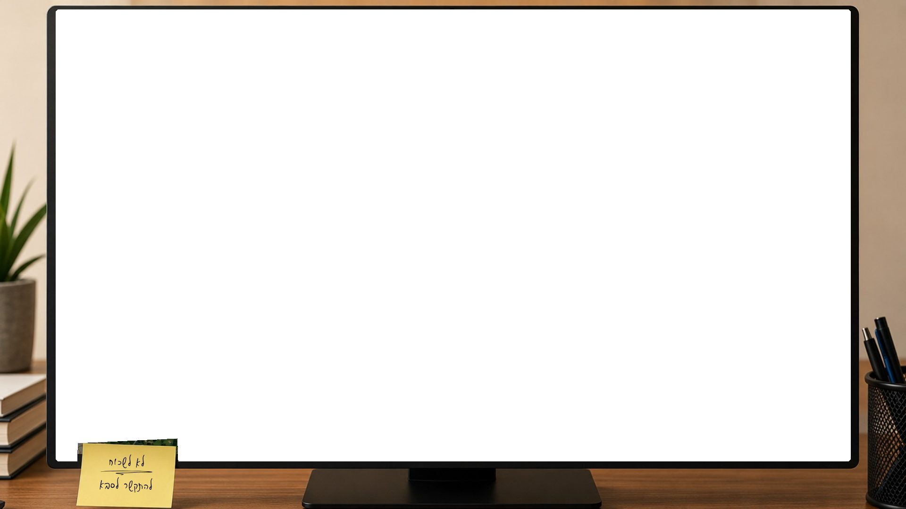
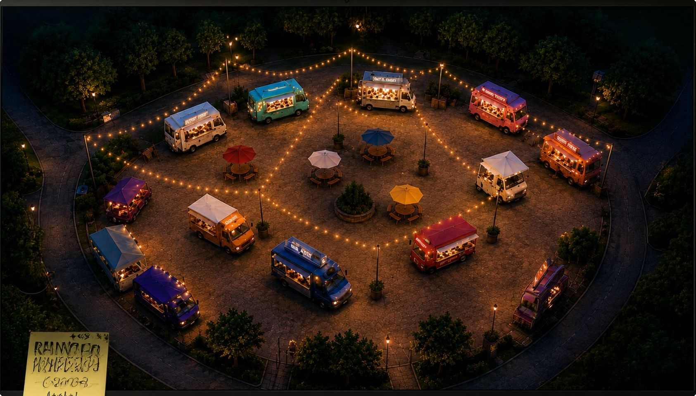
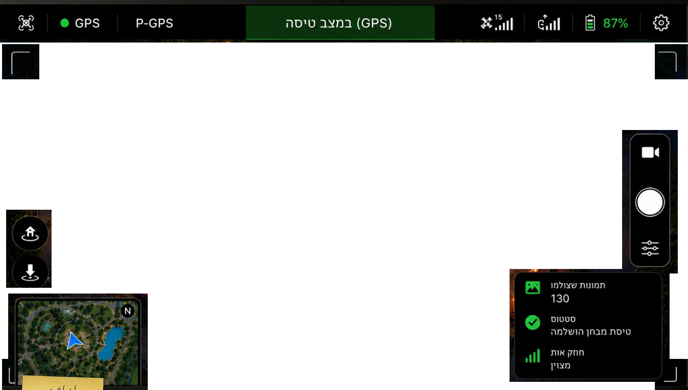
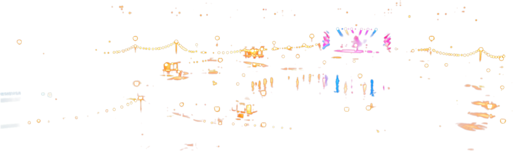
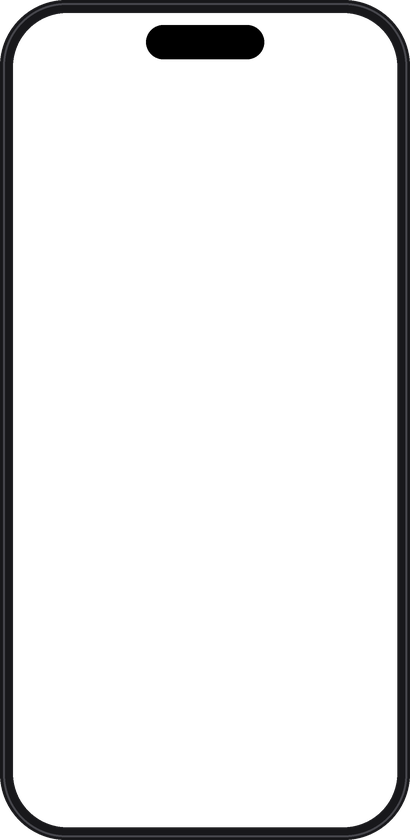
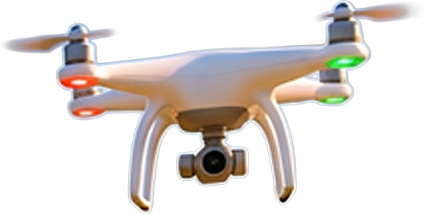

לחישוב הטווח, חסרו את הנתון הקטן ביותר מהנתון הגדול ביותר, ואז חפשו את המספר שנמצא בדיוק באמצע, לקבלת החציון.
1. ליהי וארז רוצים לחשב את החציון ואת הטווח של התמונות, כדי להבין מהן היכולות של הרחפן מדגם "נץ".
ביומן הטיסות מופיע מספר התמונות שהוא צילם בכל טיסה.
גררו את הנתונים מהקטן לגדול, והקלידו את הטווח ואת החציון.
הטווח של מספר התמונות:
החציון של מספר התמונות:
זו אינה התשובה, נסו שוב.
תוכלו ללחוץ על כפתור העזרה כדי לקבל רמז.
צדקת!
אחרי שנסדר את הנתונים מהקטן לגדול, נקבל את הסדרה:
110, 120, 125, 130, 140.
הטווח הוא ההפרש בין הנתון הגדול ביותר לנתון הקטן ביותר.
לכן: 140 - 110 = 30
החציון הוא הנתון שנמצא בדיוק באמצע הסדרה, ולכן הוא: 125.
זו טעות
אחרי שנסדר את הנתונים מהקטן לגדול, נקבל את הסדרה:
110, 120, 125, 130, 140.
הטווח הוא ההפרש בין הנתון הגדול ביותר לנתון הקטן ביותר.
לכן: 140 - 110 = 30
החציון הוא הנתון שנמצא בדיוק באמצע הסדרה, ולכן הוא: 125.
האם החלפת 120 ב-145 משנה את סדר הנתונים?

2. אחרי שהטעות תוקנה, ליהי וארז הגיעו להשערה:
"תיקון מספר התמונות מ-120 ל-145 אמנם הגדיל את ממוצע התמונות שהרחפן צילם, אבל הוא כנראה לא השפיע על החציון, כי זה בסך הכול שינוי של נתון אחד מתוך חמישה".
איזו מהטענות הבאות היא הנכונה ביותר?
זו אינה התשובה, נסו שוב.
תוכלו ללחוץ על כפתור העזרה כדי לקבל רמז.
צדקת!
החציון נקבע לפי סדר הנתונים.
כלומר, כשהנתון 120 תוקן ל-145, סדר המספרים השתנה, ולכן גם החציון השתנה מ-125 ל-130.
זו טעות
החציון נקבע לפי סדר הנתונים.
כלומר, כשהנתון 120 תוקן ל-145, סדר המספרים השתנה, ולכן גם החציון השתנה מ-125 ל-130.
מהו המספר שנמצא באמצע הסדרה? ומה מתקבל כשנחלק את סכום כל הנתונים ב-5?
3. ארז העלה מחשבה מעניינת:
"נראה לי שבסדרת הנתונים המתוקנת, הממוצע והחציון שווים זה לזה!".
תיקון הטעות שינה את הנתונים.
סדרו אותם מחדש ביומן הטיסות, ואז קבעו האם הטענה נכונה.
זו אינה התשובה, נסו שוב.
תוכלו ללחוץ על כפתור העזרה כדי לקבל רמז.
צדקת!
סדרת הנתונים המתוקנת היא:
110, 125, 130, 140, 145.
לכן החציון הוא 130, וגם הממוצע הוא 130:
110 + 125 + 130 + 140 + 145 = 650
650 ÷ 5 = 130
במקרה הזה שני המדדים שווים, ולכן ארז צודק.
זו טעות
סדרת הנתונים המתוקנת היא:
110, 125, 130, 140, 145.
לכן החציון הוא 130, וגם הממוצע הוא 130:
110 + 125 + 130 + 140 + 145 = 650
650 ÷ 5 = 130
במקרה הזה שני המדדים שווים, ולכן ארז צודק.
האם הוספת מספר ששווה בדיוק לממוצע יכולה למשוך את הממוצע למעלה או למטה?
4. בחמש טיסות המבחן, הרחפן מדגם "נץ" צילם 110, 125, 130, 140 ו-145 תמונות, והממוצע שלהן הוא 130.
ליהי חשבה לעצמה:
"אם בטיסת המבחן השישית מספר התמונות יהיה זהה לממוצע, אז הממוצע של מספר התמונות ב-6 הטיסות ישתנה."
האם המחשבה של ליהי נכונה או לא נכונה?
זו אינה התשובה, נסו שוב.
תוכלו ללחוץ על כפתור העזרה כדי לקבל רמז.
צדקת!
הוספת נתון ששווה לממוצע לא משנה את הממוצע.
לכן ליהי טועה.
זו טעות
הוספת נתון ששווה לממוצע לא משנה את הממוצע.
לכן ליהי טועה.
התחילו בחישוב מספר התמונות הכולל של 6 הטיסות (132 ⋅ 6), ולאחר מכן חשבו כמה תמונות צולמו ב-5 הטיסות הראשונות.

5. ארז וליהי קבעו שכדי לעמוד במשימה, הממוצע של 6 טיסות המבחן של הרחפן צריך להיות 132 תמונות.
ב-5 טיסות המבחן הראשונות הרחפן צילם 110, 125, 130, 140 ו-145 תמונות.
הקלידו כמה תמונות הרחפן צריך לצלם בטיסת המבחן השישית:
תמונות.
זו אינה התשובה, נסו שוב.
תוכלו ללחוץ על כפתור העזרה כדי לקבל רמז.
צדקת!
ב-5 הטיסות הראשונות צולמו 650 תמונות.
נסמן ב-x את מספר התמונות בטיסה השישית, ונקבל:
650+x6 = 132 / ·6
650 + x = 792 / -650
x = 142
כלומר, בטיסה השישית הרחפן צריך לצלם 142 תמונות.
זו טעות
ב-5 הטיסות הראשונות צולמו 650 תמונות.
נסמן ב-x את מספר התמונות בטיסה השישית, ונקבל:
650+x6 = 132 / ·6
650 + x = 792 / -650
x = 142
כלומר, בטיסה השישית הרחפן צריך לצלם 142 תמונות.



איזה מדד מושפע מהגודל של כל מספר בסדרה?
6. ארז וליהי החליטו לשדרג את הרחפן בסוללה חדשה, בתקווה שישפר את הביצועים שלו.
כדי לבדוק את השדרוג, הם ביצעו טיסת מבחן שביעית.
במהלך הטיסה התרחשה תקלה, והרחפן צילם פחות מ 15 תמונות!
נזכיר שב-6 הטיסות הקודמות הרחפן צילם 110, 125, 130, 130, 140 ו-145 תמונות.
עזרו לארז וליהי להבין את השפעת הטיסה השביעית על המדדים.
גררו לכל מדד את התיאור המתאים:
השכיח
הממוצע
החציון
הטווח
זו אינה התשובה, נסו שוב.
תוכלו ללחוץ על כפתור העזרה כדי לקבל רמז.
צדקת!
הטיסה השביעית השפיעה על המדדים באופן שונה:
השכיח נשאר ללא שינוי: 130 הוא עדיין מספר התמונות שמופיע הכי הרבה פעמים.
הממוצע קטן: מספר התמונות הנמוך בטיסה השביעית הוריד את הממוצע.
החציון נשאר ללא שינוי: לאחר סידור הנתונים מהקטן לגדול, הערך האמצעי עדיין 130.
הטווח גדל: ההפרש בין מספר התמונות הגדול ביותר לקטן ביותר גדל.
זו טעות
הטיסה השביעית השפיעה על המדדים באופן שונה:
השכיח נשאר ללא שינוי: 130 הוא עדיין מספר התמונות שמופיע הכי הרבה פעמים.
הממוצע קטן: מספר התמונות הנמוך בטיסה השביעית הוריד את הממוצע.
החציון נשאר ללא שינוי: לאחר סידור הנתונים מהקטן לגדול, הערך האמצעי עדיין 130.
הטווח גדל: ההפרש בין מספר התמונות הגדול ביותר לקטן ביותר גדל.

אנימציה: בני הנוער המתנדבים מתקבצים יחד לתמונה קבוצתית. נשמעים הבזק וצליל של מצלמה, ומוזיקת מסיבה עמומה ברקע. אחר כך עולה טלפון, והתמונה מופיעה בתוך פוסט של ארז ברשת חברתית, ומספר הלייקים עולה במהירות עד 128.
ארז – מפיק אירועים
לפני 20 דקות
איזה ערב היה לנו!!! 🎉
תודה לכל בני הנוער המתנדבים שמילאו את הפארק בחיוכים ובאנרגיות! ✨
128 ❤️ 👍

חשבו איזה מדד סטטיסטי מחלק את הנתונים בדיוק לשני חצאים, כך שנוכל לדעת בוודאות מה קורה ב-50% "העליונים" של הטיסות?
האם זה הממוצע, הטווח או החציון?
7. הביצועים של הרחפן מדגם "נץ" הרשימו גם מנהלי פארקים אחרים.
מנהל הפארק בעיר שלכם ביקש לבדוק את נתוני טיסות המבחן של הרחפן "נץ", ואמר:
"אני מוכן לרכוש את הרחפן רק אם ברוב מוחלט של הטיסות (יותר מ-50%) הוא צילם לפחות 125 תמונות."
נזכיר שב-6 טיסות המבחן צילם הרחפן "נץ" 145, 110, 125, 130, 130, 140 תמונות.
איזה מההיגדים הוא הנכון ביותר?
זו אינה התשובה, נסו שוב.
תוכלו ללחוץ על כפתור העזרה כדי לקבל רמז.
צדקת!
החציון הוא 130, ולכן לפחות במחצית מהטיסות צולמו 130 תמונות ומעלה.
מכיוון ש-130 גדול מ-125, דרישת מנהל הפארק מתקיימת.
💡נקודה למחשבה:
הנימוק הראשון מבלבל!
הממוצע יכול להיות מושפע מטיסה אחת יוצאת דופן.
כשבודקים מה קרה אצל רוב הטיסות, אז החציון הוא המדד האמין יותר.
זו טעות
החציון הוא 130, ולכן לפחות במחצית מהטיסות צולמו 130 תמונות ומעלה.
מכיוון ש-130 גדול מ-125, דרישת מנהל הפארק מתקיימת.
💡נקודה למחשבה:
הנימוק הראשון מבלבל!
הממוצע יכול להיות מושפע מטיסה אחת יוצאת דופן.
כשבודקים מה קרה אצל רוב הטיסות, אז החציון הוא המדד האמין יותר.

אנימציה: רחפן מרחף מעל פסטיבל משפחות בפארק, ברקע נשמעים קולות ההופעה והקהל, ומעליהם נשמע קול הרחפן.
כל הכבוד, המשימה הושלמה!
הציון שלך הוא __.
יש לסגור את המשימה בלחיצה על X.